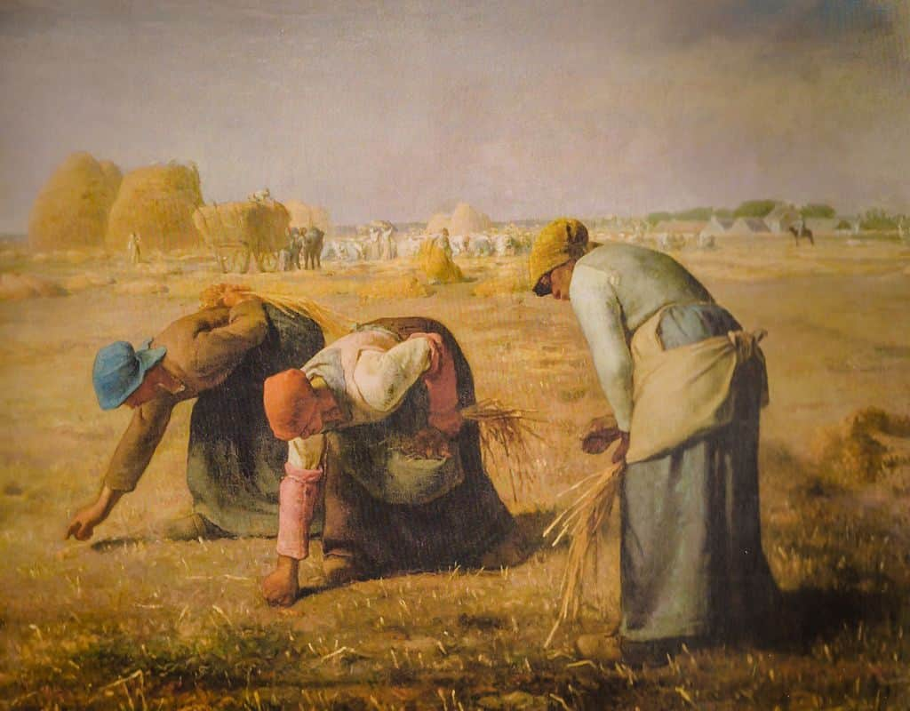
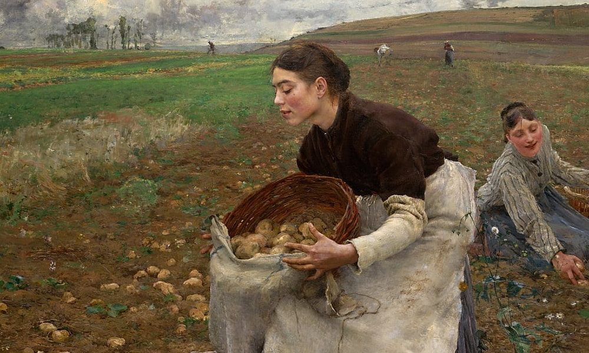
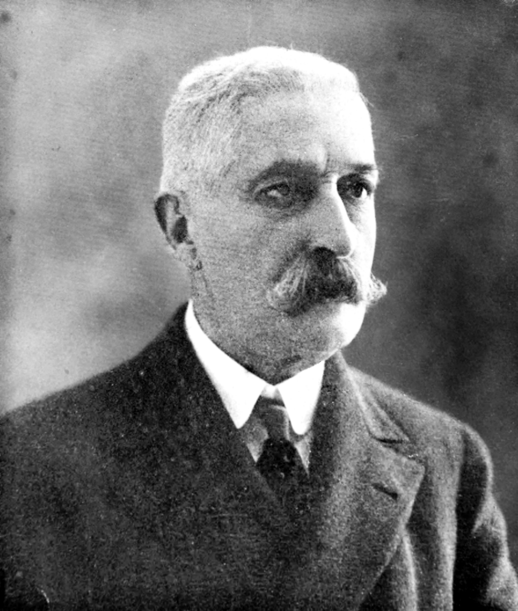
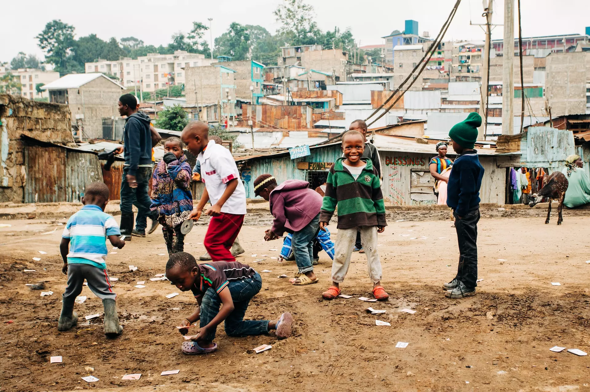
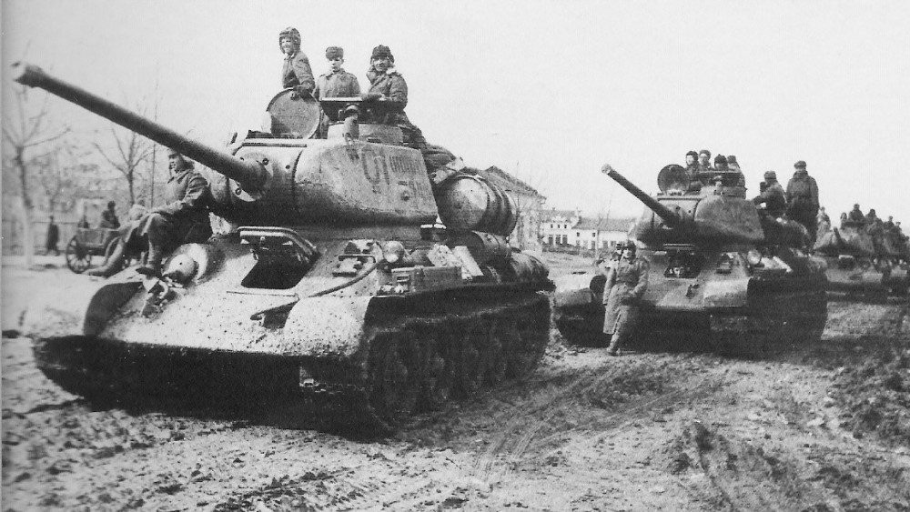
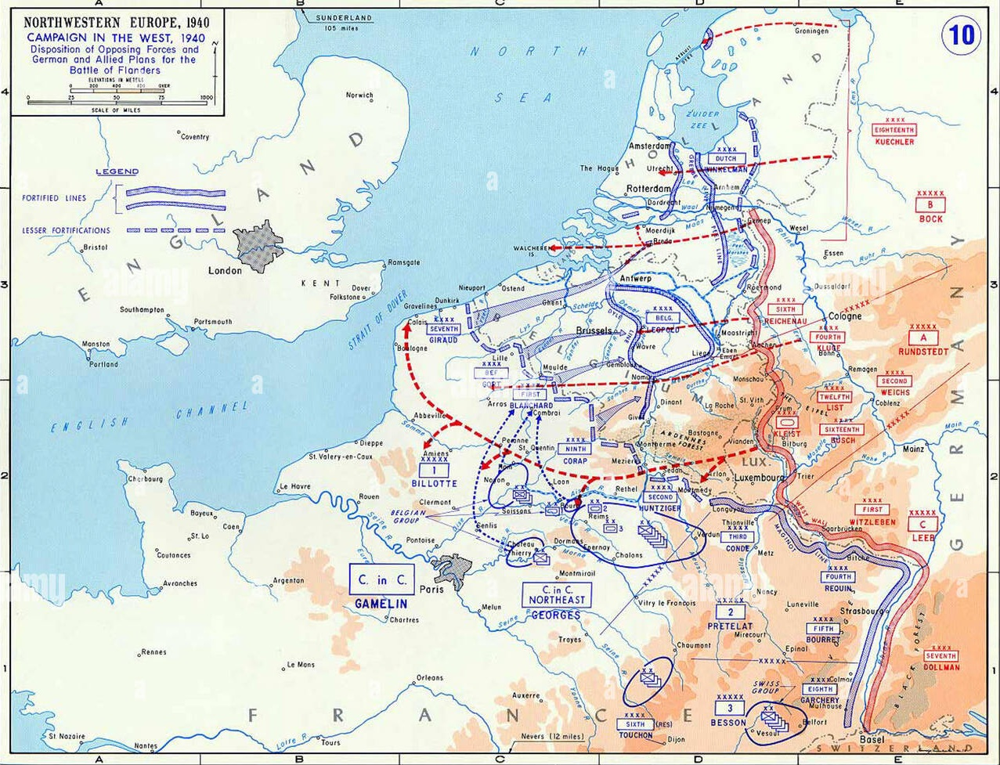
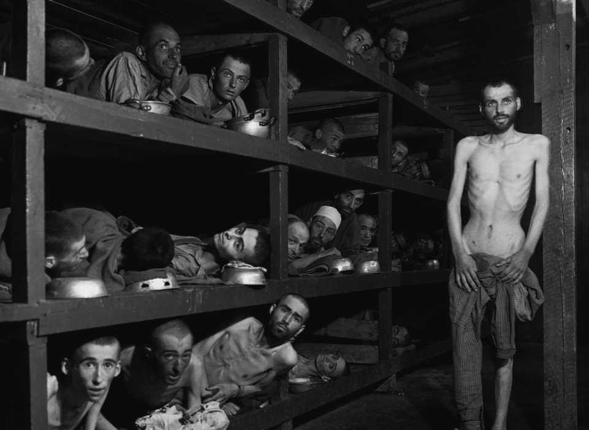

Il Verismo è un movimento letterario italiano nato nella seconda metà
dell'ottocento, ispirato al Naturalismo francese.
Il Verismo ha un carattere molto oggettivo e impersonale, elimina completamente i giudizi
dell'autore. Infatti lo scopo di questo movimento è proprio rappresentare la realtà delle classi
popolari così com'è. In questo modo emergono le leggi sociali e ambientali che regolano la vita
delle persone.

Entrambi i movimento raccontano la realtà in modo quasi scientifico, le differenze fondamentali sono:

Verga, nato a Catania nel 1840, inizialmente scrive romanzi di stampo romantico.
Con il tempo il suo stile cambia e si avvicina al Verismo, movimento di cui diventerà uno dei
massimi esponenti.
L'obiettivo di Verga era mostrare la vita delle classi più basse della società siciliana. Lui
sostiene che il destino sia immutabile: una volta nati in una famiglia povera cambiare il proprio
stato sociale è difficile, se non impossibile. La vita della classe popolare di cui parla è
caratterizzata dalla "lotta per la sopravvivenza" e immagina la società come una "grande fiumana
inarrestabile" che avanza senza fermarsi: chi si oppone alla fiumana viene travolto.

I temi di Verga non sono problemi del passato, si applicano alle dinamiche sociali del mondo moderno.
Nella società contemporane non tutti nascono con le stesse possibilità e, chi nasce in situazioni svantaggiate, fa più fatica a miglirare la sua vita.
Inoltre, la ricerca del successo economico può portare a sacrificare i propri affetti e valori, come accade nei suoi romanzi.

La Seconda Guerra Mondiale (1939–1945) fu il più grande conflitto armato della storia, combattuto tra due schieramenti principali:
Le cause principali furono le conseguenze del Trattato di Versailles, la crisi economica del '29 e l'espansionismo di Germania, Italia e Giappone.


L'Olocausto fu il genocidio perpetrato dalla Germania nazista durante la Seconda Guerra Mondiale. Tra il 1933 e il 1945, circa sei milioni di ebrei furono perseguitati e uccisi nei ghetti, nei campi di concentramento e nei campi di sterminio. Oltre agli ebrei, furono vittime delle persecuzioni anche rom, persone con disabilità, oppositori politici, omosessuali e altri gruppi considerati indesiderabili dal regime nazista. L'Olocausto rappresenta uno dei capitoli più tragici della storia umana e un monito contro l'odio, il razzismo e l'intolleranza.
